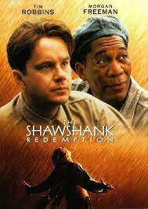

|
Forrest GumpForrest Gump, düşük I.Q. sahibi genç bir adamdır. Jenny ile tanıştığında ona aşık olur. Gump aralarında Elvis Presley, Kennedy, Nixon’ın da olduğu tarihsel kişilerle kaza eseri tanışır ve 50’lerden 70’lerin sonuna kadar gelen bir süre zarfında olaylar gelişir. Gump tamamen tesadüf olarak Vietnam savaşına ve Amerikan yakın tarihinin önemli olaylarına şahitlik eder ve hatta rol alır. Ancak bilmeden yaptıklarının ne kadar önemli sonuçları olduğundan da haberi yoktur. |
|  |
Esaretin BedeliEsaretin Bedeli, Andy ve Red isimli iki mahkumun parmaklıklar ardında kurdukları dünyanın hikayesini anlatıyor. Andy Dufresne, genç ve başarılı bir bankerdir. Karısını ve karısının sevgilisini öldürmek suçundan yargılanır ve ömür boyu hapis cezası alır. Shawsank Hapishanesi'nde dayak, işkence, tecavüz, her türlü durum yaşanmaktadır fakat Andy gene de hayata bağlı ve iyimserdir. Bu tutumu etrafındakileri de etkiler. Andy umutlu bakış açısıyla çevresindeki tüm mahkumları, parmaklıklar arkasında bile özgür bir yaşam olabileceğine inandırır. Andy'nin bu çabalarına ortak olacak bir arkadaşı da olacaktır: Red. |

|
12 Angry Man12 Öfkeli Adam, cinayetle suçlanan bir genç ile ilgili karar vermekle yükümlü 12 jüri üyesinin karar verme sürecini konu ediyor. Latin Amerikalı bir genç adam, babasını öldürdüğü gerekçesiyle cinayetle suçlanır. Sanığın kaybettiğini söylediği bir bıçak ise cinayetin işlendiği odada bulunmuştur, gencin mahkemeye sunduğu savunma zayıftır ve olan biteni duyduklarını söyleyen pek çok tanık vardır. Sanık suçlu bulunduğu taktirde idama mahkum edilecektir.Jüri sonuçları pek de şaşırtıcı değildir: 12 jüri üyesinden sekiz numaralı jüri üyesi Davis 'suçsuz' hükmü yönünde oy vermiştir. Davis’in jüri üyelerini ikna etmeye çalışması esnasında her jüri üyesinin 'suçlu' kararı vermesinin arkasında ise, aralarında yabancı düşmanlığı, kanuna aşırı güven, çoğunluğa uyma, geçmişle hesaplaşma gibi farklı kişisel sebepler olduğu ortaya çıkacaktır. |